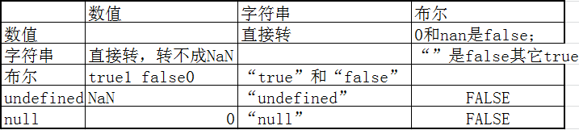

定位
- 文档流定位 position：static
- 浮动定位，浮动到本行的左边或右边，脱离文档流，应用场景： 纵向排列变成横向排列并且没有重叠的情况使用浮动定位
- position定位：
- fixed：固定定位 位置相对于浏览器窗口，不会随着内容改变而改变
- relative:相对定位，位置相对于元素的初始位置，当元素需要在初始位置做位置偏移的时候使用，不脱离文档流。
- absolute：绝对定位，位置相对于祖先元素中做了position定位(非static),当需要往页面中添加一些元素，此元素需要覆盖某些内容，但是并不影响之前的页面布局，此时只能使用绝对定位。
JavaScript
html属于搭建页面结构 css美化页面 js给页面添加行为
js历史
1995年发布 网景公司 LiveScript 同年更名为JavaScript，和java没啥关系 就是蹭热度的
js特点
- JavaScript属于脚本语言，不需要编译，由浏览器解析执行
- JavaScript可以插入到Html页面中 由浏览器执行
- JavaScript基于面向对象，弱类型语言
js优点
- 交互性：可直接和用户进行交互
- 安全性：只能在浏览器内运行，不允许访问本地硬盘中的其它资源
如何在html中添加js
-
在元素中的事件中添加
-
在head标签中添加 script标签 在标签内部写js代码，可以写在html中的其它位置，但是不推荐
<script type="text/javascript">
alert("第二种方式引入js");
</script>
-
创建*.js文件，在文件中写js代码，通过script标签中的src引入，如果使用了src属性 则不能在标签内部写js代码
<script type="text/javascript" src="first.js"></script>
JavaScript语法
数据类型
- 数值类型(number)
- 字符串类型（string）
- 布尔值类型 (boolean)
- undefine
- null
- 对象类型
变量的声明
数值类型
-
在js中所有数值的底层都是浮点型，在使用的过程中会自动转换类型(类型的隐式转换)
var x = 10/2; 5
var x = 5/2; 2.5
- NaN :Not a Number 不是一个数， NaN不和任何一个数值相等，包括它自己，如果需要判断某个变量是否为NaN使用isNaN(x)
字符串类型
通过单引号或双引号修饰一个字符串，例如：
var s1 = 'aaa'; var s2 = "bbb";
布尔类型
值为true和false
undefined 未定义
- 此类型只有一个值，值为undefined，变量声明但是没有定义的话，类型和值同为undefined
null
- 此类型也只有一个值 值为null，通常应用在方法的返回值位置.
数据类型的转换
- 在js中数据类型会自动根据需要进行类型的转换（隐式转换）
- 数值类型
- 转字符串：直接转 18->"18"
- 转布尔值: 0和NaN转false，其它所有数值true
- 字符串类型
- 转数字： 如果字符串为数字 则直接转 "18"->18,空字符串("")转为0，非数字字符串转成NaN.
- 转布尔值：空字符串转false，其它转true.
- 布尔值类型
- 转数字： TRUE->1 false->0
- 转字符串："true" "false"
- undefined类型
- 转数字： NaN
- 转布尔值： false
- 字符串： "undefined"
- null类型
- 转数字： 0
- 转布尔值： false
- 字符串： "null"

练习：
-
在页面中弹出 "66"+6的值和 "66"-6的值
alert("66"+6);
alert("66"-6);
-
判断如果内容为字符串 输出 字符串有内容 如果内容为空字符串"" 输出字符串内容为空
if("a"){
alert("字符串有内容");
}else{
alert("字符串内容为空");
}
-
布尔值类型转换 已知 var arr=[3>2>1,1<2<3];
arr[0] false 和 arr[1] true ;
运算符
- JavaScript中的运算符和Java中大体相同
不同之处：1. ==和===
比较运算符==,JavaScript中还提供了===，
- == 在比较之前会先将两端的变量统一成一种类型再进行比较。
-
===判断是否严格相等，如果类型不相等就不相等
-
测试： "666" 和 666 通过== 和 ===进行判断
alert("666"==666); //true
alert("666"===666); //false
不同之处：2. typeof
- typeof：获取某个变量的类型
- 测试： typeof 66 + 6; //"number6"
3. delete
- delete： 用于删除数组中的内容
-
测试:
var arr = [18,'小明',true];
alert(arr);// 18,'小明',true
delete arr[1];
alert(arr);// 18,,true
alert(arr[1]);// undefined
4. 两数相除 会自动转换整数和小数
alert(10/2);
alert(10/3);
语句
包括：if else while do while switch for
- 不同点：
1. if的条件 如果是其它类型会自动转成布尔类型
2. for循环中的 int i 改成 var i ，不支持增强for循环
- 测试for循环在控制台输出 0-9；
for(var i=0;i<10;i++){
console.log(i);
}
函数
和界面相关的一些函数
-
获取页面中的元素（标签）
var nameInput = document.getElementById("name");
-
从文本框中获取用户输入的内容
nameInput.value
-
往元素中添加文本 和 添加html代码
-
标签中添加文本
myDiv.innerText = "
aaa
";
-
标签中添加html代码
myDiv.innerHTML = "<h1>aaa</h1>";
- =为赋值 +=为追加内容
练习：求用户输入的数值的平方
- 创建一个pf.html，在页面中添加一个文本框 一个按钮还有一个显示结果的div
- 在html中添加js代码，声明一个名字叫做pf的函数
- 在函数内部，先得到文本框标签，获取里面的value，然后判断value的值是否是数值 如果不是则alert出输入错误，如果是数值，获取显示结果的div，把获取到的数值相乘的结果放到div里面
- 把按钮的点击事件和pf函数建立关系
作业：
- 实现一个非常low的计算器
-
在页面中添加一个大的div里面通过for循环添加9个小的填充满，总共两个颜色 相邻的颜色不同
-
扩展作业：通过多个div拼接出来一个三角形